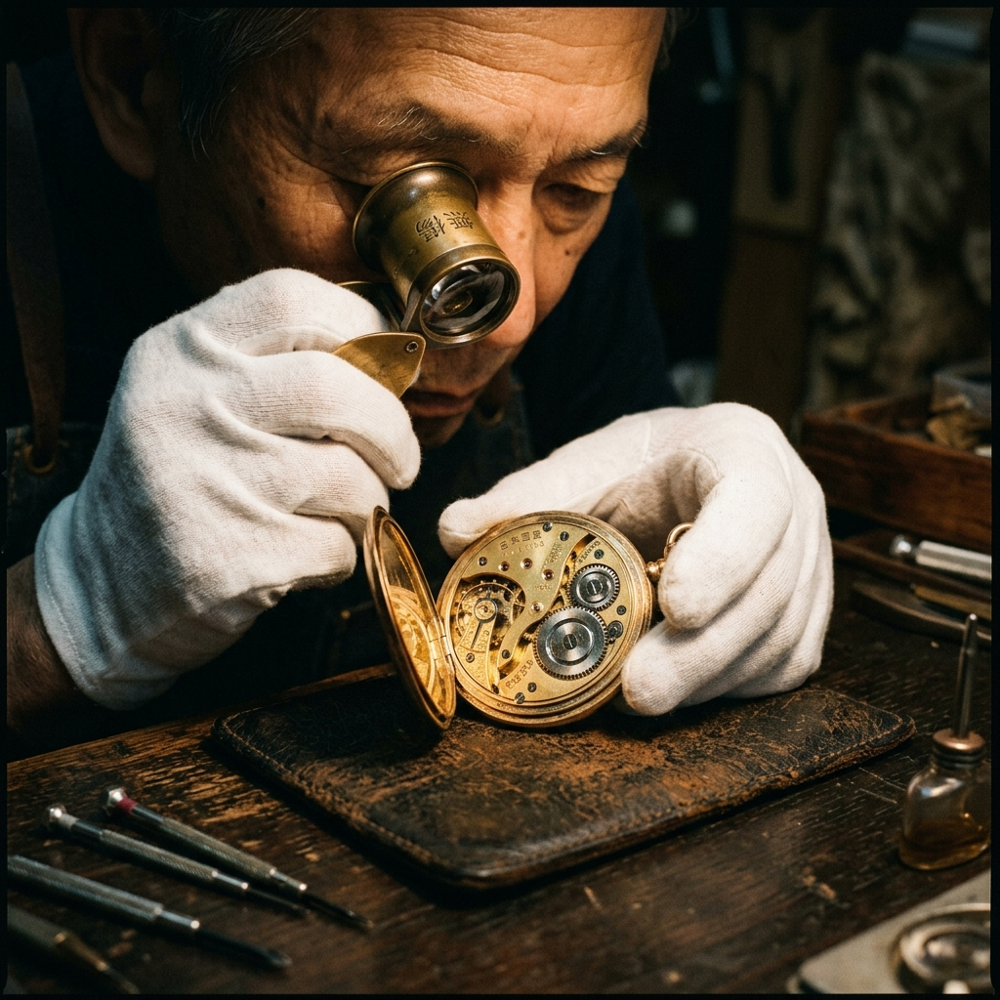

RESTAURANT DX
「いらっしゃいませ」の裏側を、
「いらっしゃいませ」の裏側を、
完全なデータサイエンスへ。
万福丸 (MANPUKUMARU) は、居酒屋や飲食店のホール業務、在庫管理、シフト作成をすべてモバイル端末で統合管理する飲食店向けバーティカルSaaSです。

THE ANALOG DRAG
「紙の伝票」という前時代的アナログ
オーダーの書き間違い、キッチンのパニック。紙ベースのオペレーションが顧客満足度を低下させています。
SMART ORDERING
ホールとキッチンを直結するシステム
モバイルオーダー
お客様のスマホから直接キッチンへ。オーダーミスを完全に防ぎます。
リアルタイム売上分析
今日どのメニューがどれくらい売れているか、過去のデータと比較して即座に把握。
自動在庫連携
注文が入るたびに食材の在庫が自動で引き落とされ、発注タイミングを通知します。
EFFICIENCY
スタッフの「歩数」を半減させる
オーダー取りの往復がなくなることで、少ない人数でも高い回転率を維持できます。
CUSTOMER LOYALTY
常連客を育成するCRM
LINEと連携し、常連客へ最適なタイミングでクーポンを自動配信します。
CLIENT SUCCESS
Case Study | 都内の海鮮居酒屋
ホール人員を2名削減しても、顧客単価が15%アップし、クレームがゼロになりました。
OUR VISION
「美味しい」の体験を最大化する
飲食店の非効率をなくし、最高のおもてなしを実現するための基盤となります。